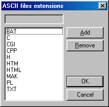

Web Site Replicator v1.0
Created by Lv 'Zetalog' Zheng of eZyScripts.Com
FTP Tutorial - Transfer Mode
There's one other thing you need to know before you can start uploading CGI scripts to your server.
You MUST upload all CGI scripts in ASCII format. To do this, before you upload your CGI scripts,
go to the menu FTP->Transfer Type->ASCII. This will make CuteFTP upload everything in ASCII format.
There's a little trick you can do so you will not have to worry about switching over to ASCII mode every time.
go to the menu FTP->Settings->Text-files extensions. This will bring up a small dialog box which looks like this:

Click on the ADD button, and type CGI in the text box at the top. Then push the ADD button again, and type PL at the top.
Keep doing this until you have all of the following extensions added in. CGI, PL, MSG, CONF, DAT, LOG, REP. From now on, anything
you upload to your server which has one of those extensions, will be automatically uploaded in ASCII format, so you no
longer have to worry about manually changing it every time!
Well, that's about it for the File Transfer Protocol (FTP) tutorial. You should now know everything you need to, in order to manage and maintain
your web server using FTP.
< Prev |